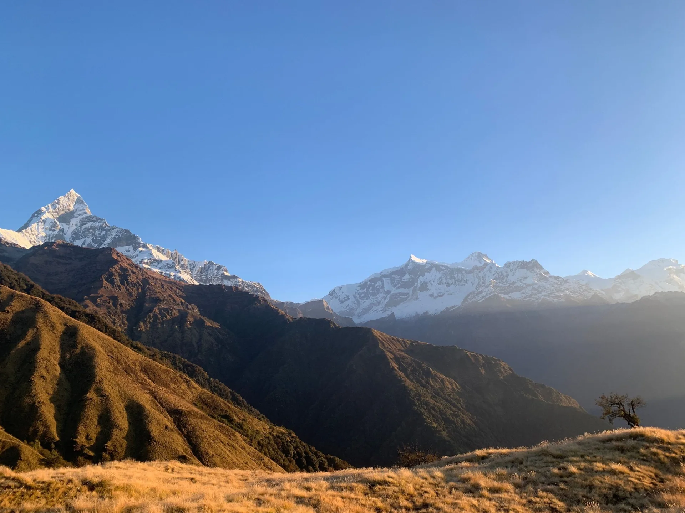
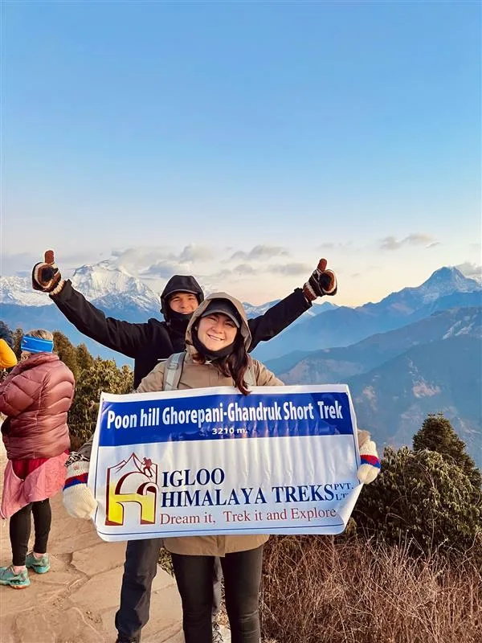
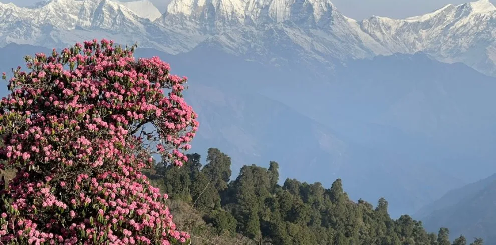

We chose the 9-day Mohare Danda Trek because we wanted an authentic, tranquil alternative to the crowded Poon Hill circuit, and Igloo Himalaya Treks delivered perfection. The community eco-lodges in Banskharka and Nangi were warm and welcoming, and staying right at Mohare Danda ridge (3,300m) for the sunrise over Dhaulagiri and Annapurna South was one of the most breathtaking moments of our lives. Our guide Sagar and our porter took exceptional care of our pace and comfort. If you want pristine trails, genuine Magar culture, and zero tourist crowds, this is the trek to do!
Annapurna Region • Eco-Community Trail & Sunrise Trek
5.0
reviews on TripAdvisor
5.0
169 reviews on Google
Mohare Danda Trek (9 Days)
Walk through Banskharka and Nangi to Mohare Danda on our guided nine-day trek through the Annapurna hills. Community lodges and village homestays bring you closer to everyday life along the route. At around 3,300 m, Mohare Danda offers mountain views towards Dhaulagiri and Annapurna South in clear weather. You stay here overnight for the following morning’s sunrise, then descend through Tikot to Tiplyang. Five walking days are combined with travel through Pokhara, starting and ending in Kathmandu.

Travelers' Choice
Best of the Best 2026




Key Trip Facts
Duration
9 days
Arrival, departure, travel & 5 walking days
Difficulty
Easy to moderate
Sustained uphill walking & a long descent
Maximum Altitude
Approx. 3,300 m (10,827 ft)
Mohare Danda Ridge
Destination
Nepal
Annapurna Conservation Area
Trek Region
Annapurna
Myagdi District, Central Nepal
Activity
Trekking & Homestays
Eco-community trails & local living
Accommodation
Hotels, Lodges & Homestay
KTM/PKR hotels; community lodges on trek
Transport
Tourist Buses & Private 4WD
KTM-PKR buses & trail road transfers
Meals
City Breakfasts & Trek Meals
Hotel breakfasts; 3 daily meals on trek
Recommended Season
Spring & Autumn
Mar–May & Sep–Nov
Trek Starts
Galeshwor
After scenic drive from Pokhara
Trek Ends
Tiplyang
Followed by drive back to Pokhara
Package Start Point
Kathmandu
Tribhuvan Int'l Airport pickup
Package End Point
Kathmandu
Airport departure transfer
Group Size
Min 1, Max 12
Solo & private departures guaranteed
Mohare Danda Trek Overview
Our nine-day Mohare Danda Trek follows village trails through Banskharka and Nangi to a mountain ridge at around 3,300 m. You stay overnight at Mohare Danda, watch the sunrise when clear weather allows and descend through Tikot to Tiplyang. The journey combines forest walking, mountain views and overnight stays in community lodges and village homestays.
After travelling from Kathmandu to Pokhara, you drive through Beni to Galeshwor. The walking begins with a bridge crossing and an uphill approach to Banskharka, passing farmland and village homes along the way. The next stage continues through forests and terraced hillsides towards Nangi. This Magar village is associated with community education and development projects, giving the route a local context beyond the mountain views from the ridge.
From Nangi, the trail climbs through rhododendron and oak forest towards Mohare Danda. As the ground opens, the surrounding peaks become more visible in clear weather. You spend the night at the ridge, with Dhaulagiri, Annapurna South and Machhapuchhre among the mountains you may see. The following morning begins early for sunrise before the descent.
The return follows forest and village paths towards Tikot, where you stay in a community homestay. You then descend to Tiplyang and drive back to Pokhara. Although this route stays below the higher Himalayan base camps, the walking still includes long climbs, uneven ground and substantial descents. Prepare for five consecutive walking days and changing weather, particularly around the ridge.
You stay in community accommodation during trekking and hotels in Kathmandu and Pokhara. The nine-day programme covers arrival, the village route, return travel and your departure from Nepal.
Mohare Danda Trek Highlights
Mohare Danda Ridge Stay (3,300 m)
Reach Mohare Danda at around 3,300 m, staying overnight on the ridge with views towards Dhaulagiri and Annapurna peaks in clear weather.
Himalayan Ridge Sunrise
Watch sunrise from Mohare Danda before descending, with first light reaching the mountains when skies clear.
Banskharka & Nangi Magar Villages
Walk through Banskharka and Nangi, passing cultivated terraces and homes on the uphill approach to Mohare Danda.
Community Lodges & Tikot Homestay
Stay in community lodges and a Tikot homestay, with local meals between walking stages.
Rhododendron & Oak Forests
Follow rhododendron and oak forest trails, with possible spring flowering along forested sections of the route.
Valley Descent to Tiplyang
Descend through Tikot to Tiplyang, finishing the walking beside the valley before travelling by road to your hotel in Pokhara.
Why Book the Mohare Danda Trek with Igloo Himalaya Treks?
We help you prepare in Kathmandu and support the trek to Mohare Danda. The package includes these arrangements and equipment.
Trek Briefing and Gear Check
Before leaving Kathmandu, we discuss the itinerary, accommodation and packing. Your briefing gives you time to ask about daily walks, village stays, altitude and equipment before travelling to Pokhara.
Guide and Porter Support
Your package includes a licensed, English-speaking guide and one porter for every two trekkers. The guide leads the route and explains local context, while your porter carries the main trekking luggage.
Equipment Provided for the Trek
We provide a returnable duffel bag and trekking map. Sleeping bags and down jackets are available on request, subject to availability. Confirm the equipment before departure and bring your personal essentials.
Communication When Plans Change
Weather and road conditions can affect the programme, including optional flights. Our team keeps you informed, explains available options and discusses any changes, with additional accommodation or transport costs clarified before proceeding.
Need Advice for Mohare Danda?
Speak directly with our local Sherpa team on WhatsApp for honest guidance on dates, homestays, and fitness.
Day 1: Arrival in Kathmandu
Tribhuvan International Airport – 1,400 m – Arrival transfer & trip briefing
Main Activity: Arrival, airport transfer and trip briefing
Overnight: Kathmandu (around 1,400 m) • Tourist-standard hotel
Meals: Not included
Welcome to Nepal. Our representative meets you at Tribhuvan International Airport and transfers you to your hotel in Kathmandu. After checking in, we discuss the route, equipment and walking schedule so you can prepare for the journey.
Depending on your arrival time, you can walk around Thamel or rest after your flight. Use the time to organise your belongings and discuss any equipment, health or dietary questions before departure.
Day 2: Drive or Fly to Pokhara
Kathmandu to Pokhara – 822 m – Tourist bus (6–7 hrs) or optional flight (25 mins)
Main Activity: Tourist bus journey or optional flight to Pokhara
Driving Time: Approximately 6–7 hours, depending on road conditions
Flight Option: Approximately 25 minutes; quoted as an upgrade
Overnight: Pokhara (around 822 m) • Tourist-standard hotel
Meals: Breakfast
After breakfast, travel to Pokhara by tourist bus or an optional domestic flight. The bus follows river valleys and hillsides; the flight is shorter and must be confirmed in advance.
The standard package includes tourist bus travel, with flights quoted as upgrades. Keep medicines and essentials in your daypack whichever option you choose. After reaching Pokhara, check into your hotel and rest. If time allows, walk beside Phewa Lake or explore Lakeside before tomorrow’s road journey towards Galeshwor and the start of the village trail.
Day 3: Drive to Galeshwor and Trek to Banskharka
Pokhara to Galeshwor (4 hrs drive) – Trek to Banskharka – 1,525 m – 3 hrs walk
Main Activity: Private drive to Galeshwor via Beni, then trek
Travel Times: Drive approx. 4 hours • Trek approx. 3 hours
Walking Route: Galeshwor–Banskharka
Overnight: Banskharka (around 1,525 m) • Community lodge
Meals: Breakfast, lunch and dinner
We drive from Pokhara through Beni to Galeshwor, where walking begins. After crossing the bridge, follow the uphill trail through farmland and paths towards Banskharka for the night.
Today combines a road journey with the first climb, so keep water and weather protection accessible. Fields and hillside homes mark the approach to the village, with forest along parts of the trail. At Banskharka, settle into the community lodge and rest before tomorrow’s walk towards Nangi. Your guide explains the next stage and the surroundings.
Day 4: Trek from Banskharka to Nangi Village
Banskharka to Nangi – 2,300 m – 5–6 hrs walk through community forest
Walking Time: Approximately 5–6 hours
Walking Route: Banskharka–Nangi
Overnight: Nangi (around 2,300 m) • Community lodge
Meals: Breakfast, lunch and dinner
Leaving Banskharka, we continue uphill towards Nangi. The trail moves between forest, cultivated terraces and village paths, gaining height through the hills. In spring, rhododendron flowers may add colour to sections of the woodland.
Nangi is a Magar village known for community projects associated with education and rural development. After reaching the lodge, take time to rest or walk nearby. Ask your guide about the village’s background while preparing for tomorrow’s longer climb to Mohare Danda.
Day 5: Trek to Mohare Danda
Nangi to Mohare Danda Ridge – 3,300 m – 6–7 hrs walk – Highest overnight stop
Walking Time: Approximately 6–7 hours
Walking Route: Nangi–Mohare Danda
Highest & Overnight Altitude: Mohare Danda, approximately 3,300 m • Community lodge
Meals: Breakfast, lunch and dinner
We leave Nangi and climb through rhododendron and oak forest towards Mohare Danda. The route gains height, with open ground appearing as we approach the ridge above the village.
At around 3,300 m, Mohare Danda is your highest overnight stop. In clear weather, Dhaulagiri, Annapurna South and Machhapuchhre are visible. Today’s climb gains substantial sleeping altitude, so tell your guide promptly about any unusual symptoms.
Check into the community lodge and rest. Enjoy evening mountain views if skies are clear. Prepare warm layers and your headlamp for tomorrow’s sunrise before the descent.
Day 6: Sunrise at Mohare Danda – Trek to Tikot Village
Ridge sunrise over Dhaulagiri & Annapurna – Trek to Tikot – 2,300 m – 6 hrs walk
Main Activity: Ridge sunrise, then trek to Tikot
Walking Time: Approximately 6 hours
Walking Route: Mohare Danda–Tikot
Overnight: Tikot (around 2,300 m) • Community homestay
Meals: Breakfast, lunch and dinner
We wake early for sunrise at Mohare Danda. When the sky is clear, the first sunlight reaches the peaks beyond the ridge, with Dhaulagiri and the Annapurna range visible across the horizon. We return to the lodge for breakfast afterwards.
We begin the descent towards Tikot, following forest trails and village paths as the hills become greener. The long downhill stage requires effort, particularly on uneven or wet ground. At Tikot, settle into the community homestay and rest before tomorrow’s final walk to Tiplyang.
Day 7: Trek to Tiplyang and Drive to Pokhara
Tikot to Tiplyang (3 hrs walk) – Drive to Pokhara (4 hrs) – 822 m
Main Activity: Trek to Tiplyang and private drive to Pokhara
Travel Times: Walk approx. 3 hours • Drive approx. 4 hours
Overnight: Pokhara (around 822 m) • Tourist-standard hotel
Meals: Breakfast and lunch
Our final walking morning follows the descent from Tikot towards Tiplyang. Forest paths and terraced slopes lead into the lower valley, where trekking ends and the return drive to Pokhara begins.
From Tiplyang, we drive back towards Pokhara through Beni. Road conditions affect the travel time, so keep your essentials within reach during the journey. After checking into your hotel, relax or take a walk around Lakeside. Breakfast and lunch are included today; dinner in Pokhara is at your own expense.
Day 8: Return to Kathmandu
Pokhara to Kathmandu – 1,400 m – Tourist bus (6–7 hrs) or optional flight
Main Activity: Tourist bus return or optional flight to Kathmandu
Driving Time: Approximately 6–7 hours, depending on road conditions
Flight Option: Quoted as an upgrade; subject to flight operations
Overnight: Kathmandu (around 1,400 m) • Tourist-standard hotel
Meals: Breakfast; farewell dinner depends on confirmed package
After breakfast, return to Kathmandu by tourist bus or an optional flight. The bus is included in our package; flight upgrades require advance confirmation and a separate quotation.
After reaching Kathmandu, check into your hotel and organise your belongings for tomorrow’s departure. Depending on the arrival time, you can rest or walk around Thamel. A farewell dinner can also be arranged if included in your confirmed package.
Day 9: Final Departure
Kathmandu departure – Transfer to Tribhuvan International Airport
Main Activity: Departure from Nepal and airport transfer
Meals: Breakfast
Your nine-day Mohare Danda Trek ends today. After breakfast, check your belongings and prepare for your onward journey. Depending on your flight time, you may have time for a final walk nearby before leaving Kathmandu.
Our representative accompanies you to Tribhuvan International Airport for your departure.
What’s Included in the Mohare Danda Trek
- Airport transfers: Private pickup and drop-off in Kathmandu for arrival and departure.
- Transport: Return tourist buses between Kathmandu and Pokhara, private local road transfers; optional domestic flights quoted separately before departure.
- Accommodation: Two nights each in Kathmandu and Pokhara tourist-standard hotels, plus four nights in community lodges and a village homestay on a twin-sharing basis during trekking.
- Meals: Hotel breakfasts; three meals from Day 3 to Day 6, plus breakfast and lunch on Day 7. Tea or coffee with meals; fresh seasonal fruit after dinner when available.
- Guide and porter: A licensed, English-speaking guide and one porter for two trekkers during trekking.
- Permits and fees: The ACAP permit, TIMS where required, local entry charges, government taxes and company service charges.
- Trekking equipment: Returnable duffel bag and trekking map; sleeping bag and down jacket available on request, subject to availability before departure.
- First-aid supplies: A basic medical kit and oximeter carried by your guide.
- Emergency support: Our team provides twenty-four-hour assistance; evacuation costs are excluded.
- Trip extras: A completion certificate and Igloo Himalaya Treks souvenir T-shirt or cap included.
What’s Not Included in the Mohare Danda Trek
- International flights and Nepal visa: Airfare to and from Nepal and your visa fee.
- Travel insurance: Your compulsory policy must cover trekking, medical treatment and emergency evacuation throughout the route.
- Emergency evacuation: Rescue transport and evacuation costs remain your responsibility or your insurer’s, under policy terms.
- Personal equipment: Boots, clothing, toiletries and electronics, plus any trekking gear beyond the items confirmed as included for departure.
- Extra food and drinks: Personal snacks, bottled water, soft drinks, alcohol and purchases beyond included meals and tea or coffee.
- Other city meals: Lunches and dinners outside confirmed inclusions, including any unconfirmed farewell dinner.
- Personal services: Showers, charging, Wi-Fi, laundry and telephone charges.
- Team tips: Optional gratuities for guides, porters and drivers.
- Additional accommodation, meals or transport: Extra costs may apply when delays, itinerary changes or extensions require services outside the programme.
Mohare Danda Trek Dates & Availability
Group Departures
If you would like to trek with other travellers, ask us about upcoming group departures. We’ll confirm the available dates, spaces and price for your chosen departure.
Private Trek Dates
Prefer to travel with your own group? Send us your preferred arrival date and number of travellers. We’ll check the arrangements for a private trek.
Prices are in US dollars and represent per-person starting rates. Send your dates and group size so we can check availability and provide your quotation. Ask us about your preferred dates.
What to Pack for the Mohare Danda Trek
Packed: 0 / 35
Pack layers for warmer village walks, cold ridge mornings and nights, and changing weather along the forest trails. Keep water, warm clothing, rain protection, medicines and valuables in your daypack. Confirm any requested equipment and the porter’s luggage allowance.
Hiking Gear 7 items
Clothing 10 items
Note: A down jacket is available on request; confirm availability before packing your layers.
Sleeping Equipment 2 items
Toiletries & Hygiene 5 items
Electronics 4 items
Documents & Personal Items 7 items
Note: We provide a returnable duffel bag and trekking map. Keep your passport, money and electronics in your daypack. The shared porter load must remain within twenty kilograms.
0/10 read
Click topics below to explore essential briefings
Trek Difficulty and Fitness
The trek is easy to moderate, with five consecutive walking days through hills and forests. The climb from Nangi to Mohare Danda takes sustained effort, while the return includes a long descent to Tikot. Expect uneven ground and steps even though technical climbing skills are unnecessary.
Previous hiking experience is helpful. First-time trekkers should build endurance before departure and become comfortable walking uphill and downhill regularly with a daypack.
Begin preparing around two to three months beforehand, allowing longer if you are starting from a low fitness level. Gradually combine regular walks, hill hikes and strength exercises. Practise in the boots you will wear on the trek.
Altitude and Acclimatisation
No dedicated acclimatisation day is scheduled. Mohare Danda is around 3,300 m, with a substantial gain from Nangi. Discuss the ascent pattern and any previous altitude concerns before booking.
Tell your guide promptly about headaches, nausea, dizziness or unusual fatigue. Do not continue to a higher sleeping altitude while experiencing symptoms of altitude illness. If symptoms worsen despite resting at the same elevation, descent is necessary. Your health must guide decisions on this lower-altitude route.
Medical Conditions and Travel Insurance
If you have an existing medical condition, seek advice from a healthcare professional familiar with high-altitude travel before booking. Discuss the planned route and any medicines you take.
Travel insurance is compulsory for this package. Confirm that your policy covers trekking to approximately 3,300 metres, emergency helicopter evacuation and medical treatment in Nepal. Check exclusions, excess charges and the insurer’s emergency assistance procedure. Carry your policy details and emergency contact number.
Accommodation and Room Facilities
You stay in tourist-standard hotels in Kathmandu and Pokhara, with community lodges and a Tikot homestay during trekking. Four mountain nights include twin-sharing accommodation, with an overnight stay at Mohare Danda.
Expect simple rooms and shared bathroom facilities at many stops. The overnight stays are part of the village experience, with fewer facilities than city hotels. Mohare Danda can be cold at night, so keep warm layers accessible.
Food and Dietary Requirements
Lodge meals commonly include dal bhat, noodles, soups and vegetable dishes. Included meals follow the daily itinerary, with seasonal fruit when available.
Tell us about allergies or dietary requirements before booking so we can discuss what can be arranged along the route. Explain strict requirements clearly, including any concerns about shared cooking equipment.
Drinking Water
Carry reusable bottles and drink boiled or appropriately treated water. Stream water and untreated tap water may still contain germs that cause illness.
Boiling is the most reliable way to kill germs. If boiling is unavailable, filtration followed by disinfection offers broader protection than many portable filters alone. Follow the instructions for your water-treatment equipment or tablets.
Guide and Porter Support
A licensed, English-speaking guide and one porter for every two trekkers are included. Your porter carries the luggage, up to twenty kilograms shared between two people. You carry a daypack with daily essentials.
Showers, Charging and Communication
Hot showers, Wi-Fi and device charging may cost extra, with availability varying between lodges and homestays. Mobile reception and internet connections can be unreliable in the hills. Carry a power bank and tell family that you may have periods without contact during the mountain trekking days.
Permits and Documents
We arrange the ACAP permit and applicable trekking documentation included in the package. TIMS is listed where required; confirm the arrangements for this exact route before departure. Carry your passport, insurance details and copies of documents.
Travel Delays and Extra Time
Rain, landslides and roadworks can affect local transfers and Kathmandu–Pokhara travel. Optional flights depend on weather and operating conditions, so keep flexibility around journeys.
Allow extra time before your international departure. Additional accommodation, meals or transport can cost extra when delays or weather require changes to the programme.
Altitude Profile of the Mohare Danda Trek
Walking begins at Galeshwor and climbs through Banskharka and Nangi to Mohare Danda, the highest planned point and overnight stop. After sunrise, you descend to Tikot and finish through Tiplyang. The table shows the overnight stops, with the final trekking night spent below the ridge.
Elevations are approximate and follow the overnight stops in our itinerary.
Places Along the Route
- • Day 3 — Banskharka: Around 1,525 m, your first village overnight after the drive to Galeshwor.
- • Day 4 — Nangi: Around 2,300 m, an overnight stop before climbing through forest to Mohare Danda.
- • Day 5 — Mohare Danda: Around 3,300 m, the highest point and overnight stop of the trek.
- • Day 6 — Mohare Danda sunrise: Around 3,300 m, before descending to the homestay in Tikot.
The sunrise does not involve a higher overnight stay. You sleep at Mohare Danda beforehand, then descend to Tikot after the morning visit and breakfast.
Weather and Best Time for the Mohare Danda Trek
Spring, from March to May, and autumn, from September to November, are generally the best seasons for the Mohare Danda Trek. Both offer favourable walking conditions and opportunities for mountain views, although rain, cloud, cold weather and snowfall remain possible around the higher ridge.
These are seasonal patterns; conditions can vary from year to year and during an individual trek.
How Weather Changes Along the Route
Walking around Banskharka and Tikot can feel warm in sunshine. Nangi and Mohare Danda are colder before sunrise and after sunset, with wind adding to the chill on the ridge.
Even during spring and autumn, the ridge can feel cold before dawn. Winter brings a greater chance of snow and freezing conditions around Mohare Danda. Carry warm layers, rain protection and suitable footwear whichever month you choose for trekking.
Which Season Should You Choose?
Choose spring if flowering rhododendrons and gradually warming days interest you. Choose autumn, particularly October or November, if mountain visibility is your priority. Winter and monsoon require greater flexibility around the ridge, village trails and road journeys through the hills.
Book the Mohare Danda Trek
Send us your travel dates, number of travellers and questions about the trek. We’ll check availability and confirm the price and arrangements for your group. If you are unsure whether this nine-day itinerary suits your fitness or expectations, tell us about your walking experience so we can discuss the village stays and route.
Best Himalayan Trekking Reviews
Over 15,000 adventure seekers have explored Everest, Annapurna, and Manaslu with Igloo Himalaya Treks.

9 May

28 February

11 January

14 March


Mohare Danda Trek FAQs
General & Route
Can I do this trek without previous trekking experience?
∨
Yes, with suitable fitness and preparation. The route requires five consecutive walking days, including a sustained climb to Mohare Danda and a long descent. Practise hill walks with a daypack before departure. Technical climbing experience is not required.
What is the highest altitude on this itinerary?
∨
Mohare Danda, at approximately 3,300 metres, is the highest planned point and the highest overnight stop. You stay there on Day 5, then watch sunrise the following morning before descending towards Tikot for the next night.
Does this itinerary include Ghorepani or Poon Hill?
∨
No. This itinerary follows Galeshwor, Banskharka, Nangi, Mohare Danda, Tikot and Tiplyang. The route does not include Ghorepani or Poon Hill. Those places belong to different Annapurna itineraries, which we can discuss if they interest you.
How does this trek differ from Poon Hill trekking?
∨
Our nine-day Mohare Danda itinerary follows Banskharka, Nangi and Tikot, with community lodges and homestays. Poon Hill trekking follows the Ghorepani route through other villages. Both offer Annapurna and Dhaulagiri mountain views; compare the routes and overnight stays before choosing.
Do we stay overnight at Mohare Danda?
∨
Yes. We stay in a community lodge at Mohare Danda on Day 5, after the climb from Nangi. This puts you near the ridge for the following morning’s sunrise, before breakfast and the descent towards Tikot. Facilities remain simple.
Are dedicated acclimatisation days included here?
∨
No dedicated acclimatisation day is scheduled in the programme. The climb from Nangi to Mohare Danda gains about 1,000 metres in sleeping altitude. Discuss the ascent before booking and report symptoms promptly to your guide.
Is insurance covering trekking to 3,000 metres sufficient?
∨
No. Mohare Danda reaches approximately 3,300 metres, above that limit. Your policy must cover the full planned trekking altitude, emergency helicopter evacuation and medical treatment in Nepal. Check exclusions and the insurer’s assistance procedure before starting the journey.
Does being fit protect me from altitude sickness?
∨
No. Good fitness helps with the walking demands, but it does not prevent altitude illness. Fit and experienced trekkers can also become unwell. Follow your guide’s advice and report symptoms promptly instead of assuming fitness will protect you.
What should I do if I feel unwell at altitude?
∨
Tell your guide promptly about headaches, nausea, dizziness or unusual fatigue. Do not ascend to a higher sleeping altitude while experiencing symptoms of altitude illness. If symptoms worsen despite rest at the same elevation, descent is necessary.
Do I need to carry my main trekking bag?
∨
A porter carries your main bag, with one porter shared between two trekkers. The shared load is limited to 20 kg. You carry a daypack with water, weather protection, medicines, valuables and other daily essentials.
Do I need to bring a sleeping bag and down jacket?
∨
A sleeping bag and down jacket are available on request, subject to availability. Confirm both before departure, or bring your own. We provide a returnable duffel bag; personal boots, clothing and other personal equipment remain your responsibility.
Can I book as a solo traveller?
∨
Yes. The solo price is from USD 685 per person. Send us your dates so we can check availability and confirm your quotation, including the room arrangement, porter allocation and any supplement for your departure.
MORE ADVENTURES
You Might Also Like
If you prefer a higher ridge, the Ghorepani sunrise route or more comfortable village lodges, consider these other Annapurna packages.

Annapurna Region 11 DaysKhopra Ridge Trek
Walk through villages and forests towards Khopra Ridge, with views of Dhaulagiri and Annapurna mountains in clear weather. This longer route suits travellers who want mountain walking and a higher overnight stop than Mohare Danda.
 Annapurna Region
10 Days
Annapurna Region
10 Days
Ghorepani Poon Hill Trek
Follow the Ghorepani trail and visit Poon Hill for sunrise before continuing through Tadapani and Ghandruk. Choose this route if those villages and the forest trail interest you more than Mohare Danda.
 Annapurna Region
9 Days
Annapurna Region
9 Days
Mardi Himal Trek
Climb through forest towards High Camp and the Mardi Himal viewpoint, with Machhapuchhre close above the ridge in clear weather. This route reaches higher than Mohare Danda and suits travellers interested in open mountain paths alongside forest trails.
 Annapurna Region
9 Days
Annapurna Region
9 Days
Annapurna Luxury Trek
Explore Ghandruk, Landruk and Dhampus with comfortable lodge stays and flights between Kathmandu and Pokhara. Kathmandu sightseeing complements the route. This package suits travellers who prefer village walks and upgraded accommodation rather than staying at Mohare Danda.
Enquire about your preferred package for current prices and availability.